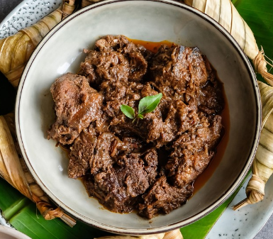

Pizza Hawaii

Ingredients
- 1 Anis
- 1 litre coconut milk
- 6 small onions
- 3 cloves of garlic
- 5 lomboks
- 3cm ginger
- 2cm laos
- 3cm koenjit
- 1kg beef
How to make it
- Cook anis in coconut milk
- Cut everything
- mix it to goo in kitchen machine
- heat a pan and put all stuff in it
- Add meat
- Cook for 4 hours
- Enjoy!